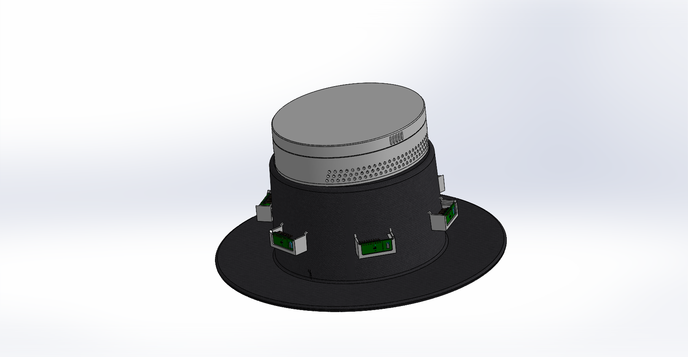
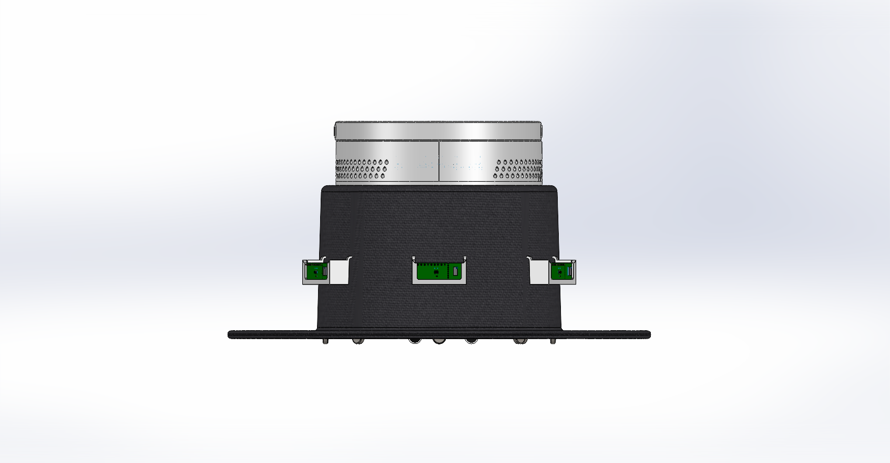
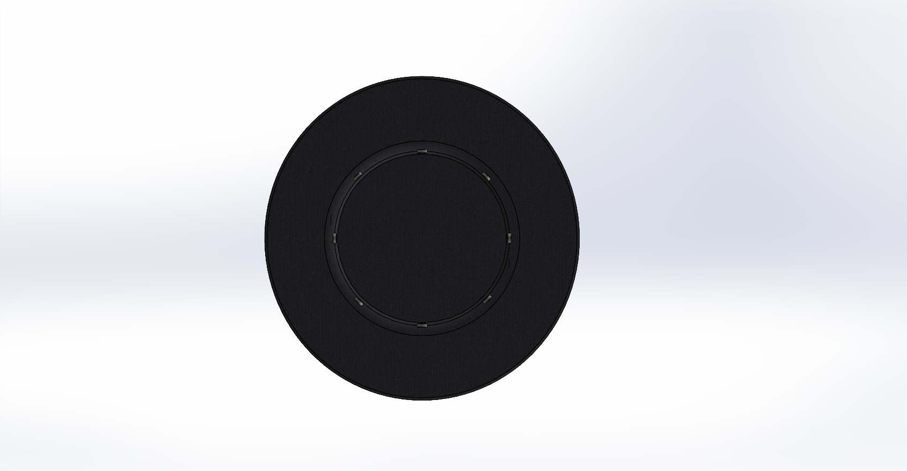
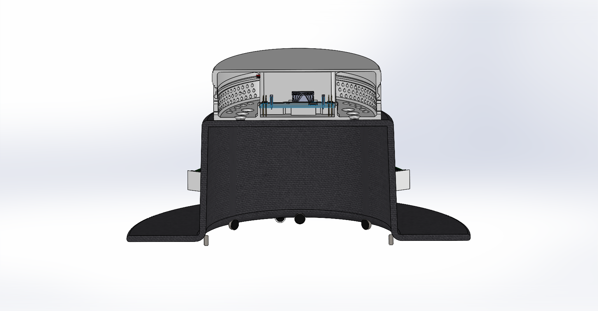
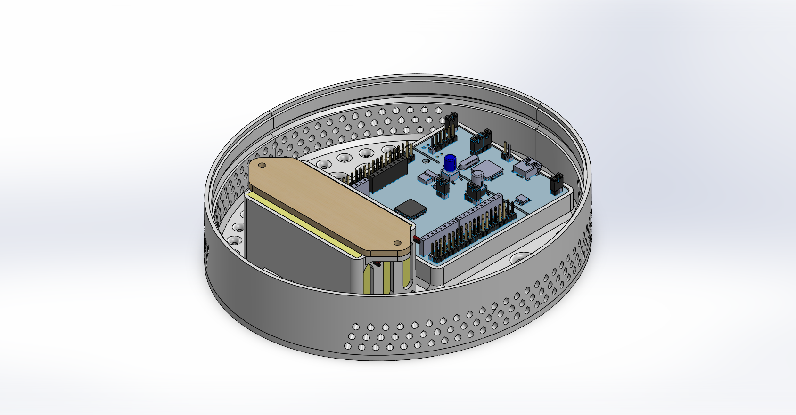
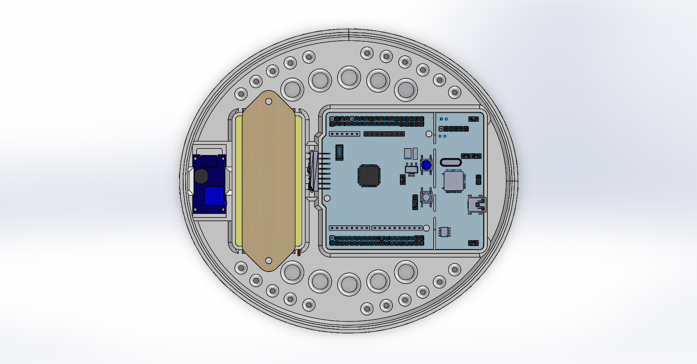

Mechanical Design
The mechanical design is centered on a classic wide-brimmed black fedora, with the design concept fully modeled in Solidworks. Our design goals were to conceal every electronic components, keep all of the components accessible for maintenance and future iteration, and prioritize using low-cost components and manufacturing. Some components are housed within the hat itself, while others can be found in a 3D-printed electronics housing on the top of the hat.


Six VL53L5CX-SATEL Time-of-Flight sensors are mounted along the outside of the brim, evenly spaced to provide a full 360° proximity vision arc. Eight ERM haptic vibration motors are secured on the inner edge of the brim, each corresponding to a different zone around the user. There are also two force-sensing resistors placed to detect whether or not a user is currently using the hat device or not.


The STM32 microcontroller, the Li-ion batteries, the gyroscopic sensor, and the boost converter are all found inside of the electronics housing mounted on the top of the hat's crown. The housing is completely made out of 3D-printed PLA, with grooves and vents added to the housing's design to allow for proper airflow and heat dissipation from the electronics inside. There is also a heatsink attached to the boost converter placed on top of a basswood vent, since this components can easily surpass PLA's glass transition temperature (point at which PLA begins to soften).


Bill of Materials — Mechanical
| # | Part | Description | Vendor | Unit Price | Qty | Subtotal |
|---|---|---|---|---|---|---|
| 1 | Mini Vibration Motors | DC 3V 12000rpm Flat Coin Button Haptic (10-Pack) | Amazon | $5.99 | 1 | $5.99 |
| 6 | Black Fedora Flat Hat | Classic Wide Brim Cap | Amazon | $17.99 | 1 | $17.99 |
| 9 | S8050 NPN Transistor | Motor driver transistor | In-house | — | 8 | $0 |
| 12 | Basswood Sheets 3mm | 12″×16″ hardwood for laser-cut enclosure | Amazon | $16.99 | 1 | $16.99 |
| 13 | Bambu PLA Filament | 1 kg spool for 3D-printed spacers | In-house | — | — | $0 |